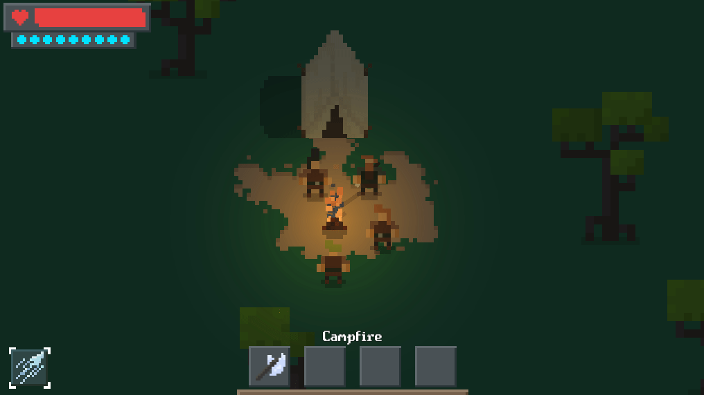
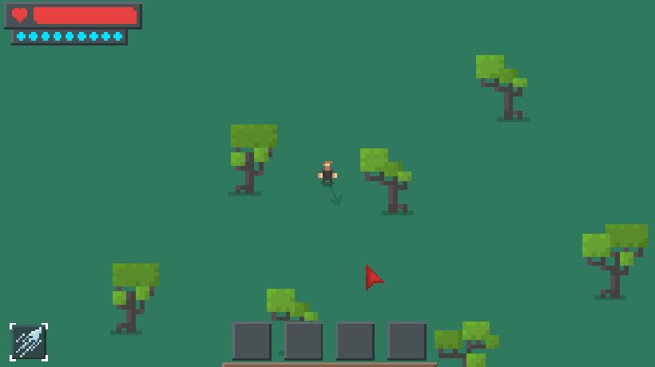

What is it?
Build and protect your settlement, venture on expeditions with your party and find valuables and gear to develop your home into a sprawling safe haven for those who are lost in the Marchlands.
Marchlands is an RPG centered around building an outpost and protecting your settlers!

In Marchlands you start out with nothing but land. Travelers will frequently pass by and, if there is space for them, they might even move in. But there are also more hostile visitors in the Marchlands. Make sure you and your settlers are properly armed to deal with any intruders.
Build and Protect
The core of Marchlands is a balance between peaceful settlement building and exciting combat. When adventuring or when protecting your outpost, you will come across a wide range of loot including weapons, armor and blueprints for new buildings and furniture.

Most interactions in Marchlands are done via dialogue. You want someone to move into your settlement? Ask them. You want to give one of your settlers some new powerful gear? Go tell them you have a gift for them. This removes the need of impersonal UI menus and hopefully creates player-settler relationships.
Combat is diverse with many different weapons, abilities and magic to use against your enemies. You can also command three settlers more directly by having them in your party! In this way you can manage their equipment and orders instantly.

The art style and even gameplay in Marchlands are in many ways minimalistic. This simple art style frees up time to focus on game design and both the quality and quantity of content.